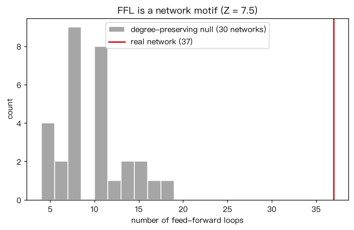

Example03 / 13
前馈环计数与保持入度/出度的随机化零模型（网络基序 Z 分数）
构造 200 个节点的有向“调控网络”：随机有向边 + 人为嵌入的 30 个前馈环（X→Y、Y→Z、X→Z）。 count_ffl 统计满足 X→Y、Y→Z、X→Z 的三元组数；用有向边交换生成 30 个保持每个节点入度和出度的 随机化网络作为对照，计算 Z = (N_real − mean N_rand) / sd N_rand 与计数比。 输出解读：真实网络的 FFL 数远多于随机化网络，Z 很大，说明 FFL 在此网络中是“基序”。 正式分析应使用更多随机网络（如 1000 个），并同时报告经验 p 值。
Output输出图

Output文字输出
真实网络 FFL 数 = 37，随机化均值 = 9.5 ± 3.6，Z = 7.5，计数比 = 3.9
Code代码
# 构造 200 个节点的有向“调控网络”：随机有向边 + 人为嵌入的 30 个前馈环（X→Y、Y→Z、X→Z）。
# count_ffl 统计满足 X→Y、Y→Z、X→Z 的三元组数；用有向边交换生成 30 个保持每个节点入度和出度的
# 随机化网络作为对照，计算 Z = (N_real − mean N_rand) / sd N_rand 与计数比。
# 输出解读：真实网络的 FFL 数远多于随机化网络，Z 很大，说明 FFL 在此网络中是“基序”。
# 正式分析应使用更多随机网络（如 1000 个），并同时报告经验 p 值。
import numpy as np
import networkx as nx
def make_trn(seed=0):
"""模拟数据，仅用于演示方法：随机有向网络 + 嵌入的前馈环。"""
rng = np.random.default_rng(seed)
D = nx.gnm_random_graph(200, 300, directed=True, seed=seed)
for _ in range(30):
x, y, z = rng.choice(200, 3, replace=False)
D.add_edges_from([(x, y), (y, z), (x, z)])
D.remove_edges_from(list(nx.selfloop_edges(D)))
return D
def count_ffl(D):
"""对每条边 (x, y)，统计同时满足 y→z 且 x→z 的 z（z 不等于 x、y），累加返回。"""
total = 0
for x, y in D.edges():
common = set(D.successors(x)) & set(D.successors(y))
common.discard(x); common.discard(y)
total += len(common)
return total
def degree_preserving_shuffle(D, n_swap, rng):
"""有向边交换：(a→b, c→d) 换成 (a→d, c→b)，保持所有节点的入度和出度。"""
D = D.copy()
edges = list(D.edges())
done = 0
while done < n_swap:
i, j = rng.integers(len(edges), size=2)
(a, b), (c, d) = edges[i], edges[j]
if len({a, b, c, d}) < 4 or D.has_edge(a, d) or D.has_edge(c, b):
continue
D.remove_edges_from([(a, b), (c, d)]); D.add_edges_from([(a, d), (c, b)])
edges[i], edges[j] = (a, d), (c, b)
done += 1
return D
D = make_trn()
n_real = count_ffl(D)
rng = np.random.default_rng(1)
null = [count_ffl(degree_preserving_shuffle(D, 3 * D.number_of_edges(), rng)) for _ in range(30)]
z = (n_real - np.mean(null)) / (np.std(null) + 1e-9)
print(f"真实网络 FFL 数 = {n_real}，随机化均值 = {np.mean(null):.1f} ± {np.std(null):.1f}，Z = {z:.1f}，"
f"计数比 = {n_real / max(np.mean(null), 1e-9):.1f}")
import matplotlib.pyplot as plt
fig, ax = plt.subplots(figsize=(6.4, 4.2))
ax.hist(null, bins=10, color="0.65", edgecolor="white", label="degree-preserving null (30 networks)")
ax.axvline(n_real, color="C3", lw=2, label=f"real network ({n_real})")
ax.set_xlabel("number of feed-forward loops"); ax.set_ylabel("count")
ax.set_title(f"FFL is a network motif (Z = {z:.1f})"); ax.legend(loc="upper center")
plt.tight_layout(); plt.show()Run在浏览器中运行
首次加载 Python 环境约需 20–40 秒；可以修改参数后重新运行。